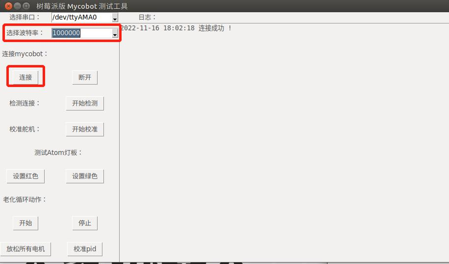
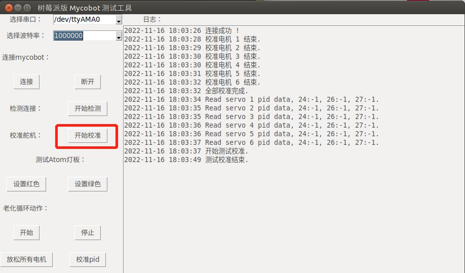

Implement robot arm calibration
Applicable devices
- myCobot 280 Pi
- myCobot 320 Pi
- mechArm 270 Pi
Operation steps
Step 1: Atom burns the latest version of atomMain.
Step 2: Create a new Python file *.py on the desktop, copy the following code into it and save it.
Note: The file is named: rasp_mycobot_test_gui.py.
#!/usr/bin/env python3
import socket
import tkinter
from tkinter import ttk
import time
import threading
import os
import textwrap
import serial
import serial.tools.list_ports
from pymycobot.mycobot import MyCobot
from pymycobot import PI_PORT, PI_BAUD
LOG_NUM = 0
class MycobotTest(object):
def __init__(self):
self.mycobot = None
self.win = tkinter.Tk()
self.win.title("树莓派版 Mycobot 测试工具")
self.win.geometry("918x511+10+10") # 290 160为窗口大小，+10 +10 定义窗口弹出时的默认展示位置
self.port_label = tkinter.Label(self.win, text="选择串口：")
self.port_label.grid(row=0)
self.port_list = ttk.Combobox(
self.win, width=15, postcommand=self.get_serial_port_list
) # #创建下拉菜单
self.get_serial_port_list() # #给下拉菜单设定值
self.port_list.current(0)
self.port_list.grid(row=0, column=1)
self.baud_label = tkinter.Label(self.win, text="选择波特率：")
self.baud_label.grid(row=1)
self.baud_list = ttk.Combobox(self.win, width=15)
self.baud_list["value"] = ("115200", "1000000")
self.baud_list.current(0)
self.baud_list.grid(row=1, column=1)
# Connect
self.connect_label = tkinter.Label(self.win, text="连接mycobot：")
self.connect_label.grid(row=2)
self.connect = tkinter.Button(self.win, text="连接", command=self.connect_mycobot)
self.disconnect = tkinter.Button(
self.win, text="断开", command=self.disconnect_mycobot
)
self.connect.grid(row=3)
self.disconnect.grid(row=3, column=1)
# Check servo.
self.check_label = tkinter.Label(self.win, text="检测连接：")
self.check_label.grid(row=4)
self.check_btn = tkinter.Button(
self.win, text="开始检测", command=self.check_mycobot_servos
)
self.check_btn.grid(row=4, column=1)
# Calibration.
self.calibration_num = None
self.calibration_label = tkinter.Label(self.win, text="校准舵机：")
self.calibration_label.grid(row=5)
self.calibration_btn = tkinter.Button(
self.win, text="开始校准", command=self.calibration_mycobot
)
self.calibration_btn.grid(row=5, column=1)
# LED.
self.set_color_label = tkinter.Label(self.win, text="测试Atom灯板：")
self.set_color_label.grid(row=6, columnspan=2)
self.color_red = tkinter.Button(
self.win, text="设置红色", command=lambda: self.send_color("red")
)
self.color_green = tkinter.Button(
self.win, text="设置绿色", command=lambda: self.send_color("green")
)
self.color_red.grid(row=7)
self.color_green.grid(row=7, column=1)
# Aging test.
self.aging_stop = False
self.movement_label = tkinter.Label(self.win, text="老化循环动作：")
self.movement_label.grid(row=8)
self.start_btn = tkinter.Button(
self.win, text="开始", command=self.start_aging_test
)
self.start_btn.grid(row=9)
self.stop_btn = tkinter.Button(
self.win, text="停止", command=self.stop_aging_test
)
self.stop_btn.grid(row=9, column=1)
# Release
self.release_btn = tkinter.Button(
self.win, text="放松所有电机", command=self.release_mycobot
)
self.release_btn.grid(row=10)
# rectify
self.rectify_btn = tkinter.Button(
self.win, text="校准pid", command=self.rectify_mycobot
)
self.rectify_btn.grid(row=10, column=1)
# Log output.
self.log_label = tkinter.Label(self.win, text="日志：")
self.log_label.grid(row=0, column=12)
_f = tkinter.Frame(self.win)
_bar = tkinter.Scrollbar(_f, orient=tkinter.VERTICAL)
self.log_data_Text = tkinter.Text(
_f, width=100, height=35, yscrollcommand=_bar.set
)
_bar.pack(side=tkinter.RIGHT, fill=tkinter.Y)
_bar.config(command=self.log_data_Text.yview)
self.log_data_Text.pack()
# self.log_data_Text.grid(row=1, column=12, rowspan=15, columnspan=10)
_f.grid(row=1, column=12, rowspan=15, columnspan=10)
def run(self):
self.win.mainloop() # run
# ============================================================
# Connect method
# ============================================================
def connect_mycobot(self):
self.prot = port = self.port_list.get()
if not port:
self.write_log_to_Text("请选择串口")
return
self.baud = baud = self.baud_list.get()
if not baud:
self.write_log_to_Text("请选择波特率")
return
baud = int(baud)
try:
# self.mycobot = MyCobot(PI_PORT, PI_BAUD)
self.mycobot = MyCobot(port, baud)
# self.mycobot = MyCobot("/dev/cu.usbserial-0213245D", 115200)
self.write_log_to_Text("连接成功 !")
except Exception as e:
err_log = """\
\r连接失败 !!!
\r=================================================
{}
\r=================================================
""".format(
e
)
self.write_log_to_Text(err_log)
def disconnect_mycobot(self):
if not self.has_mycobot():
return
try:
del self.mycobot
self.mycobot = None
self.write_log_to_Text("断开连接成功 !")
except AttributeError:
self.write_log_to_Text("还没有连接mycobot！！！")
# ============================================================
# Function method
# ============================================================
def release_mycobot(self):
if not self.has_mycobot():
return
self.mycobot.release_all_servos()
self.write_log_to_Text("Release over.")
def check_mycobot_servos(self):
if not self.has_mycobot():
return
ping_commands = [
[255, 255, 1, 2, 1, 251],
[255, 255, 2, 2, 1, 250],
[255, 255, 3, 2, 1, 249],
[255, 255, 4, 2, 1, 248],
[255, 255, 5, 2, 1, 247],
[255, 255, 6, 2, 1, 246],
[255, 255, 7, 2, 1, 246],
]
res = []
for idx, command in enumerate(ping_commands, start=1):
self.mycobot._write(command)
time.sleep(0.1)
if not self.mycobot._read(1):
res.append(idx)
time.sleep(0.1)
if res:
self.write_log_to_Text("关节 {} 无法通信！！！".format(res))
else:
self.write_log_to_Text("所有关节连接正常。")
def calibration_mycobot(self):
"""Calibration button click event.
Click to calibrate one motor at a time and calibrate in turn. After all
calibration, resume initialization.
"""
if not self.has_mycobot():
return
if not self.calibration_num:
self.calibration_num = 0
self.calibration_num += 1
self.mycobot.set_servo_calibration(self.calibration_num)
time.sleep(0.1)
self.mycobot.send_angle(self.calibration_num, 0, 0)
time.sleep(0.1)
self.write_log_to_Text("校准电机 %s 结束." % self.calibration_num)
if self.calibration_num == 6:
self.write_log_to_Text("全部校准完成.")
self.calibration_num = None
self.rectify_mycobot()
self._calibration_test()
def send_color(self, color: str):
if not self.has_mycobot():
return
color_dict = {
"red": [255, 0, 0],
"green": [0, 255, 0],
"blue": [0, 0, 255],
}
self.mycobot.set_color(*color_dict[color])
self.write_log_to_Text("发送颜色: {}.".format(color))
def start_aging_test(self):
if not self.has_mycobot():
return
self.aging_stop = False
self.aging = threading.Thread(target=self._aging_test, daemon=True)
self.aging.start()
# self._aging_test()
self.write_log_to_Text("开始循环老化测试 ...")
def stop_aging_test(self):
try:
os.system("sudo systemctl stop aging_test.service")
os.system("sudo rm /home/pi/aging_test.sh")
os.system("sudo rm /home/pi/Desktop/aging_test.py")
os.system("sudo rm /etc/systemd/system/aging_test.service")
os.system("sudo systemctl daemon-reload")
self.write_log_to_Text("结束循环老化测试.")
except:
self.write_log_to_Text("结束老化测试失败 ！！！")
def rectify_mycobot(self):
if not self.has_mycobot():
return
for i in range(1, 7):
self.mycobot.set_servo_data(i, 24, 0)
time.sleep(0.1)
self.mycobot.set_servo_data(i, 26, 3)
time.sleep(0.1)
self.mycobot.set_servo_data(i, 27, 3)
time.sleep(0.1)
time.sleep(0.1)
for i in range(1, 7):
self.write_log_to_Text(
"Read servo {} pid data, 24:{}, 26:{}, 27:{}.".format(
i,
self.mycobot.get_servo_data(i, 24),
self.mycobot.get_servo_data(i, 26),
self.mycobot.get_servo_data(i, 27),
)
)
time.sleep(0.1)
# ============================================================
# Utils method
# ============================================================
def has_mycobot(self):
"""Check whether it is connected on mycobot"""
if not self.mycobot:
self.write_log_to_Text("还没有连接mycobot！！！")
return False
return True
def _aging_test(self):
"""
Aging test thread target.
By using in `start_aging_test()` and `stop_aging_test()`.
"""
# if socket.gethostname() != "pi":
# self.write_log_to_Text("老化测试支持 Raspberry OS.")
# return
aging_test_content_py = textwrap.dedent(
"""\
#!/usr/bin/python3
from pymycobot.mycobot import MyCobot
from pymycobot import PI_PORT, PI_BAUD
import time
mycobot = MyCobot('%s', %s)
def aging_test():
# fast
mycobot.set_color(255, 0, 0)
mycobot.wait(5).send_angles([0, 0, 0, 0, 0, 0], 95)
mycobot.wait(3).send_angles([170, 0, 0, 0, 0, 0], 95)
mycobot.wait(3).send_angles([-170, 0, 0, 0, 0, 0], 95)
mycobot.wait(3).send_angles([0, 0, 0, 0, 0, 0], 95)
mycobot.wait(3).send_angles([0, 90, 0, 0, 0, 0], 95)
mycobot.wait(3).send_angles([0, -90, 0, 0, 0, 0], 95)
mycobot.wait(3).send_angles([0, 0, 0, 0, 0, 0], 95)
mycobot.wait(3).send_angles([0, 0, 140, 0, 0, 0], 95)
mycobot.wait(3).send_angles([0, 0, -140, 0, 0, 0], 95)
mycobot.wait(3).send_angles([0, 0, 0, 0, 0, 0], 95)
mycobot.wait(3).send_angles([0, 0, 0, 130, 0, 0], 95)
mycobot.wait(3).send_angles([0, 0, 0, -110, 0, 0], 95)
mycobot.wait(3).send_angles([0, 0, 0, 0, 0, 0], 95)
mycobot.wait(3).send_angles([0, 0, 0, 0, 165, 0], 95)
mycobot.wait(3).send_angles([0, 0, 0, 0, -165, 0], 95)
mycobot.wait(3).send_angles([0, 0, 0, 0, 0, 0], 95)
mycobot.wait(3).send_angles([0, 0, 0, 0, 0, 180], 95)
mycobot.wait(3).send_angles([0, 0, 0, 0, 0, -180], 95)
# middle
mycobot.set_color(0, 255, 0)
mycobot.wait(3).send_angles([0, 0, 0, 0, 0, 0], 55)
mycobot.wait(5).send_angles([170, 0, 0, 0, 0, 0], 55)
mycobot.wait(6.5).send_angles([-170, 0, 0, 0, 0, 0], 55)
mycobot.wait(5).send_angles([0, 0, 0, 0, 0, 0], 55)
mycobot.wait(5).send_angles([0, 90, 0, 0, 0, 0], 55)
mycobot.wait(5).send_angles([0, -90, 0, 0, 0, 0], 55)
mycobot.wait(5).send_angles([0, 0, 0, 0, 0, 0], 55)
mycobot.wait(5).send_angles([0, 0, 140, 0, 0, 0], 55)
mycobot.wait(5).send_angles([0, 0, -140, 0, 0, 0], 55)
mycobot.wait(5).send_angles([0, 0, 0, 0, 0, 0], 55)
mycobot.wait(5).send_angles([0, 0, 0, 130, 0, 0], 55)
mycobot.wait(5).send_angles([0, 0, 0, -110, 0, 0], 55)
mycobot.wait(5).send_angles([0, 0, 0, 0, 0, 0], 55)
mycobot.wait(5).send_angles([0, 0, 0, 0, 165, 0], 55)
mycobot.wait(5).send_angles([0, 0, 0, 0, -165, 0], 55)
mycobot.wait(5).send_angles([0, 0, 0, 0, 0, 0], 55)
mycobot.wait(5).send_angles([0, 0, 0, 0, 0, 180], 55)
mycobot.wait(5).send_angles([0, 0, 0, 0, 0, -180], 55)
# slow
mycobot.set_color(0, 0, 255)
mycobot.wait(5).send_angles([0, 0, 0, 0, 0, 0], 15)
mycobot.wait(7).send_angles([170, 0, 0, 0, 0, 0], 15)
mycobot.wait(7).send_angles([-170, 0, 0, 0, 0, 0], 15)
mycobot.wait(11).send_angles([0, 0, 0, 0, 0, 0], 15)
mycobot.wait(7).send_angles([0, 90, 0, 0, 0, 0], 15)
mycobot.wait(7).send_angles([0, -90, 0, 0, 0, 0], 15)
mycobot.wait(0).send_angles([0, 0, 0, 0, 0, 0], 15)
mycobot.wait(7).send_angles([0, 0, 140, 0, 0, 0], 15)
mycobot.wait(7).send_angles([0, 0, -140, 0, 0, 0], 15)
mycobot.wait(11).send_angles([0, 0, 0, 0, 0, 0], 15)
mycobot.wait(7).send_angles([0, 0, 0, 130, 0, 0], 15)
mycobot.wait(7).send_angles([0, 0, 0, -110, 0, 0], 15)
mycobot.wait(11).send_angles([0, 0, 0, 0, 0, 0], 15)
mycobot.wait(7).send_angles([0, 0, 0, 0, 165, 0], 15)
mycobot.wait(7).send_angles([0, 0, 0, 0, -165, 0], 15)
mycobot.wait(11).send_angles([0, 0, 0, 0, 0, 0], 15)
mycobot.wait(7).send_angles([0, 0, 0, 0, 0, 180], 15)
mycobot.wait(7).send_angles([0, 0, 0, 0, 0, -180], 15)
if __name__ == '__main__':
while True:
aging_test()
"""
% (self.prot, self.baud)
)
aging_test_content_sh = textwrap.dedent(
"""\
#!/bin/bash
/usr/bin/python3 /home/pi/Desktop/aging_test.py
"""
)
aging_test_content_service = textwrap.dedent(
"""\
[Unit]
Description=aging-test
[Service]
Type=forking
User=pi
Restart=on-failure
RestartSec=2
ExecStart=/home/pi/aging_test.sh
[Install]
WantedBy=multi-user.target
"""
)
os.system(
'echo "' + aging_test_content_py + '" >> /home/pi/Desktop/aging_test.py'
)
os.system('echo "' + aging_test_content_sh + '" >> /home/pi/aging_test.sh')
os.system("sudo chmod +x /home/pi/aging_test.sh")
os.system(
'echo "'
+ aging_test_content_service
+ '" >> /home/pi/Desktop/aging_test.service'
)
os.system(
"sudo mv /home/pi/Desktop/aging_test.service /etc/systemd/system/aging_test.service"
)
os.system("sudo systemctl enable aging_test.service")
os.system("sudo systemctl start aging_test.service")
def _calibration_test(self):
self.write_log_to_Text("开始测试校准.")
angles = [0, 0, 0, 0, 0, 0]
test_angle = [-20, 20, 0]
for i in range(6):
for j in range(3):
angles[i] = test_angle[j]
self.mycobot.send_angles(angles, 0)
time.sleep(0.7)
self.write_log_to_Text("测试校准结束.")
def get_serial_port_list(self):
plist = [
str(x).split(" - ")[0].strip() for x in serial.tools.list_ports.comports()
]
print(plist)
self.port_list["value"] = plist
return plist
def get_current_time(self):
"""Get current time with format."""
current_time = time.strftime("%Y-%m-%d %H:%M:%S", time.localtime(time.time()))
return current_time
def write_log_to_Text(self, logmsg: str):
global LOG_NUM
current_time = self.get_current_time()
logmsg_in = str(current_time) + " " + str(logmsg) + "\n" # 换行
if LOG_NUM <= 18:
self.log_data_Text.insert(tkinter.END, logmsg_in)
LOG_NUM += len(logmsg_in.split("\n"))
# print(LOG_NUM)
else:
self.log_data_Text.insert(tkinter.END, logmsg_in)
self.log_data_Text.yview("end")
if __name__ == "__main__":
MycobotTest().run()
Step 3: Open the terminal (shortcut CTRL+ALT+t), enter the following command, and then press Enter:
cd Desktop
python3 rasp_mycobot_test_gui.py
Step 4: Select the corresponding baud rate and click Connect.
- myCobot 280-Pi: 1000000
- myCobot 320-Pi: 115200

Step 5: Manually return each joint of the robot arm to zero position and click Start Calibration. Calibration End appears on the interface, and the robot arm calibration is completed.
